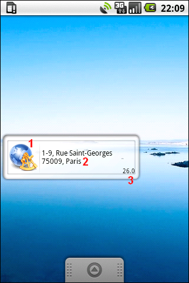
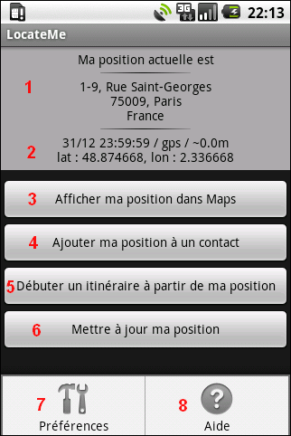

LocateMe
Equipe Migo - 2009
LocateMe est un widget Android qui affiche en temps réel votre position.
De plus, LocateMe vous permet d'effectuer rapidement les actions suivantes :
- ajout de votre position comme l'adresse d'un contact ;
- afficher votre position sur une carte ;
- lancer un itinéraire au départ de votre position ;
- ...
Important : la précision de l'adresse affichée n'est pas certifiée, elle dépend de l'environnement d'utilisation et du service de localisation employé (GPS, GSM, ...).
Ce document vous aide à prendre en main le widget LocateMe

1. Ceci est l'îcone de LocateMe, une tape dessus permet d'accéder à toutes les fonctionnalités ;
2. Cette partie indique l'adresse approximative de votre position actuelle. Si aucune adresse n'a été trouvée, vos coordonnées GPS sont indiquées à la place ;
3. Ce nombre représente le rayon de précision de votre position. Par exemple, sur la copie d'écran, vous vous trouvez dans un rayon de 26 mètres autour de la rue Saint-Georges. La valeur peut être exprimée en mètre ou en mile en fonction de vos préférences.

1. Cette partie indique l'adresse approximative de votre position actuelle ;
2. Les différentes informations affichées sont :
- la date de dernière mise à jour de la position (le format de la date est modifiable dans les préférences) ;
- le service de localisation utilisé, c'est-à-dire par le GPS ou par la triangulation GSM (Network) ;
- le rayon de précision de votre position (la valeur peut être exprimée en mètre ou en mile en fonction de vos préférences) ;
- vos coordonnées actuelles avec votre latitude (lat) et votre longitude (lon) ;
3. Ce bouton affiche votre position sur une carte (disponible si votre position est déterminée) ;
4. Ce bouton ajoute votre adresse actuelle comme l'adresse d'un contact (disponible si une adresse a été déterminée à partir de votre position) ;
5. Ce bouton lance un itinéraire à partir de votre adresse actuelle (disponible si une adresse a été déterminée à partir de votre position) ;
6. Ce bouton force la mise à jour de votre position sans tenir compte des contraites de rafraîchissement fixées dans vos préférences (tout le temps disposnible) ;
7. Ce lien, disponible en pressant la touche "menu", permet de modifier les préférences de LocateMe (délai de rafraîchissement, préférences d'affichage, ...) ;
8. Ce lien, disponible en pressant la touche "menu", affiche cette aide.